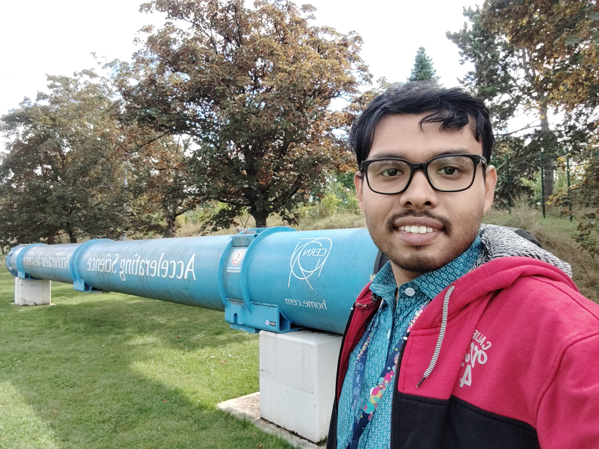

INFN Postdoctoral Fellow, INFN Sezione di Trieste, Trieste, Italy
Experimental Researcher with ALICE Collaboration at CERN

Welcome to my homepage!
I am an experimental nuclear physicist working at the frontier of high-energy heavy-ion physics. My research aims to understand the properties of Quark–Gluon Plasma (QGP) — a deconfined state of quarks and gluons that existed in the early universe just microseconds after the Big Bang — through measurements in ultra-relativistic collisions at the CERN Large Hadron Collider (LHC).
Since 2018, I have been an active member of the ALICE Collaboration, one of the four major LHC experiments. I have contributed extensively to detector calibration, data quality assurance, physics data processing shifts, and have led key primary-author physics analyses in measurements of inclusive photon and charged-particle production across a wide range of collision systems: pp, p–Pb, Pb–Pb, and light-ion (pO, OO, Ne–Ne).
In April 2025, I was appointed Convener of the Physics Analysis Group (PAG) "Global Event Properties" within the ALICE Physics Working Group "Light Flavour Spectra", coordinating approximately 25 physicists across multiple international institutions. This role involves overseeing and facilitating physics analyses of global collision observables within the ALICE Collaboration.
My results have been published in leading peer-reviewed journals including the European Physical Journal C, Pramana – Journal of Physics, and Chinese Physics C, and have been presented at major international conferences (ICHEP, EPS-HEP, Quark Matter, Initial Stages) as well as in invited plenary talks at the EPIPHANY Conference and VECC Kolkata.